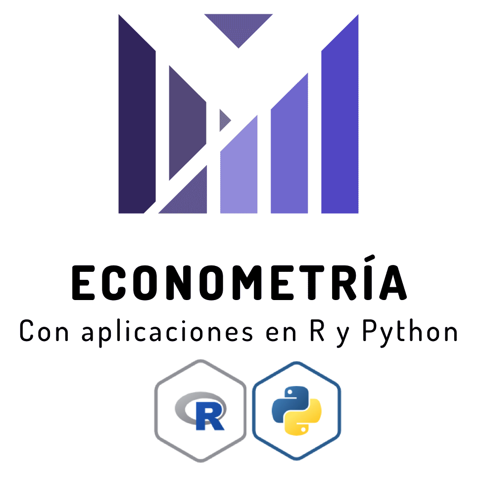

Econometría
Con aplicaciones en R y Python
Julián Ramajo ![]()

PREFACIO
El objetivo de este libro de texto en formato eBook es exponer los fundamentos teóricos básicos de la econometría, así como la implementación práctica de los métodos y técnicas más importantes de esta disciplina usando los lenguajes de programación R y Python.
Requisitos previos
- R, Python y RStudio deben estar instalados localmente (ver Capítulo 0, dedicado a la instalación y configuración del software necesario).
Estructura del eBook
- Capítulo 0 (Software): Aspectos técnicos.
- Capítulo 1 (Introducción): Conceptos básicos de la econometría.
- Capítulo 2 (Núcleo): El modelo de regresión lineal y sus hipótesis básicas.
- Capítulo 3 (Ampliaciones): Diagnosis, correcciones y extensiones del modelo de regresión lineal.
Autor
Julián Ramajo es Catedrático de Economía Aplicada (Econometría) en la Universidad de Extremadura. https://sites.google.com/site/julianramajo/
Cita del libro
Ramajo, J. (2023) Econometría: Con aplicaciones en R y Python. Edition 2023-11. https://jramajo.quarto.pub/econometriarpy/
Página web
Licencia
Este eBook es de uso libre, con una licencia del tipo Creative Commons Attribution-NonCommercial-ShareAlike 4.0 International License.